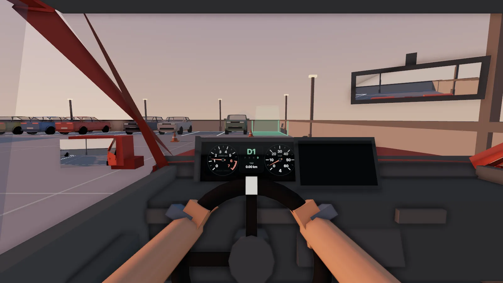

Roof
RoofThe final exam
The last lots are on the roof, where the sun sits low and every shadow is long.
2.6 m bay8° heading tolerance2 min limit

Level 1 · Why this exists
I was supposed to be studying for a physics test.
Inclines. Friction. The forces on a car parked on a ramp.
I got bored and went looking for a parking game to play for five minutes.
None of them felt right.
So I closed the textbook and made my own.
— Daksh Anajwala
Level 2 · Twelve car parks
RoofThe last lots are on the roof, where the sun sits low and every shadow is long.
2.6 m bay8° heading tolerance2 min limit
B4Fluorescent tubes, a van on one side and a concrete pilaster on the other.
0.45 m to the pilaster2.75 m bays

SeatYou only ever see what a driver sees: the bonnet, the mirrors, the dials.
720° steeringlive mirrorsanalog dials
 R
RThe dash screen wakes up with guidelines that bend as you steer, and the sensors beep faster as you close in.
beeps under 1.5 msolid tone under 0.3 m
Roof · You made it up here